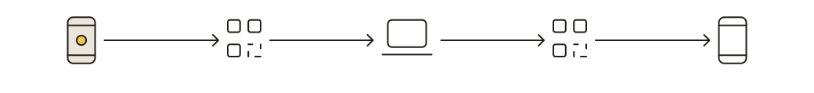
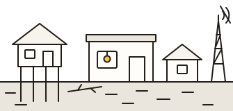

Pass 2, A4. Motion has one job: to answer something real that just happened. Tokens, every keyframe running next to its reduced-motion still, the M1–M4 fixes, press states, where each keyframe is used, and the I1–I3 art. Specimens here replay every 2.6 s so you can watch them; in the app each plays once, on its real event. Tweaks: stop the replay, or preview the whole page as reduced motion.
{{ reduceNote }}
:root {
--dur-press: 90ms; --dur-quick: 160ms; --dur-base: 200ms;
--dur-slow: 400ms; --dur-draw: 600ms; --dur-loop: 1400ms;
--stagger: 40ms; --rise: 8px;
--ease-out: cubic-bezier(0.2, 0.8, 0.2, 1);
--ease-in-out: cubic-bezier(0.4, 0, 0.2, 1);
}
@media (prefers-reduced-motion: reduce) { :root { --stagger: 0ms; } }@media (prefers-reduced-motion: reduce) {
*:not(.motion-safe), *:not(.motion-safe)::before, *:not(.motion-safe)::after {
animation-delay: 0s !important;
transition-delay: 0s !important;
}
}// when the real event fires (saved, received, read, approved):
el.dataset.just = 'land';
el.addEventListener('animationend', () => delete el.dataset.just, { once: true });
/* keyframes only play the way in: the resting CSS is the final state */
[data-just="land"] { animation: land var(--dur-base) var(--ease-out) backwards; }Only transform, opacity, clip-path and stroke-dashoffset animate. Meters use scaleX, never width. Left box: live. Right box: what reduced motion shows.
translateY(var(--rise)) → 0, opacity 0 → 1, --dur-base, --ease-out. Sheets, toast, intro cards, 17g and 19g panels, 19f steps. Still: appears in place.
translateY(-8px) → 0 and opacity, --dur-base. The --ok-tint and “Just now” are static state for the visit. 16b, 18c, 20c rows, 1g row, 9a new rows. Still: no movement.
Old value up and out, new one in from below, in a clipped box, --dur-quick. P1: Home numbers, 8d count, meter labels. Never a clinical result. Still: swaps in place.
scaleX 0 → 1 from the left, --dur-slow, --ease-out. The segment just received, intro step bar, 18d bar just landed. Still: drawn filled.
stroke-dashoffset 1 → 0 on pathLength="1" paths: --dur-quick for checks, --dur-draw for lines. Phosphor icons are filled shapes, so a check icon “draws” as a clip-path wipe, left to right. 17g, 17h, 21a checks (all together), 0c loop, LoopStrip connector, 19f rail, 19c underlines (P1). Still: drawn.
QR: clip-path inset from the top to none, --dur-draw, once, then still. OCR boxes: opacity and scale .96 → 1, --stagger apart. 11b boxes, 14e and 22a QRs. Still: shown at once.
scale 1.08 → 1 and opacity, --dur-base, on the icon only. 19g seal, LoopStrip step 4, 11b tags, 21a success; P1: 6c, 13b, 14c, Prepare “Done”. Still: static icon.
rotate, --dur-loop, linear. One shared .spin class on every circle-notch while its work is real: records loading (Home, Watch, Stock, Compare), Prepare's “Downloading” rows, “Writing from the plan's numbers…”, “Looking for a QR”, “Looking for the chest…”. Still: static icon plus the words.
opacity in two steps over --dur-loop (0.7 s on, 0.7 s off), only while tokens stream. The 19c cursor. Still: solid block.
As now: a 30% segment slides on a --dur-loop loop; under reduced motion it pulses (right). Progress.
rise on the way in (--dur-base). Exit is instant. The toast is also the role="status" text twin.
A stepped visibility delay (animation: show 0s 300ms both), never a fade. Mark it .motion-safe so the delay survives reduced motion. Still: static icon plus the words.
Primary on :active: --night fill (on dark screens: --on-night-2). Secondary buttons, rows, chips and tabs on :active: --sunken. Buttons only: scale(0.98) over --dur-press. Hover stays a solid color change. Reduced motion: the color change only. Left: rest. Right: pressed.
Inline SVG, pasted into components, never into public/. One 2 px ink line weight, round caps and joins. Fills only --paper, --surface, --sunken; the logo's amber for one dot. No gradients, filters, raster, text or SMIL. aria-hidden; labels are HTML. Files in svg/.
Ink rounded square (r 24 of 96), the paper “a” as an outlined path from Atkinson Hyperlegible Next 800 (OFL), the amber dot. No font needed. Home brand row 28, 0a 32, LaptopNav 36, M4 40, 0a fallback 96, og-image and video cards.
335 × 56. Nodes in the Phosphor Bold shapes of device-mobile, qr-code, laptop. Connectors 2 px with small arrowheads, pathLength 1 so they can draw. Unlit nodes and connectors are --line-strong (4.3:1 on paper), dashed.

1040 × 120. og-image, end card, pitch slide. Nodes scaled 1.75× with non-scaling 2 px strokes.

335 × 160. A house on stilts, the barangay health station with its amber lamp lit, a second house, the waterline across the posts over --sunken with a few hatch strokes, a fallen branch, a cell tower with a slash (no signal). Calm, not dramatic. No people, no rain, no red crosses. 0a and the video title card. Never moves.
Sizes are the drawing itself. The exported files in svg/ also carry a content-credentials <metadata> block; paste only the drawing, or strip it with svgo. Standalone files use var(--token, #fallback), so they follow the tokens inline and still render as files.